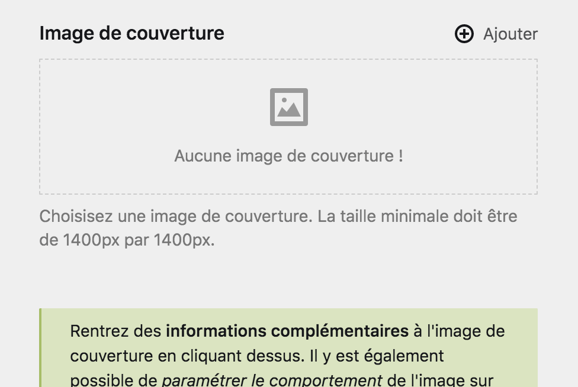
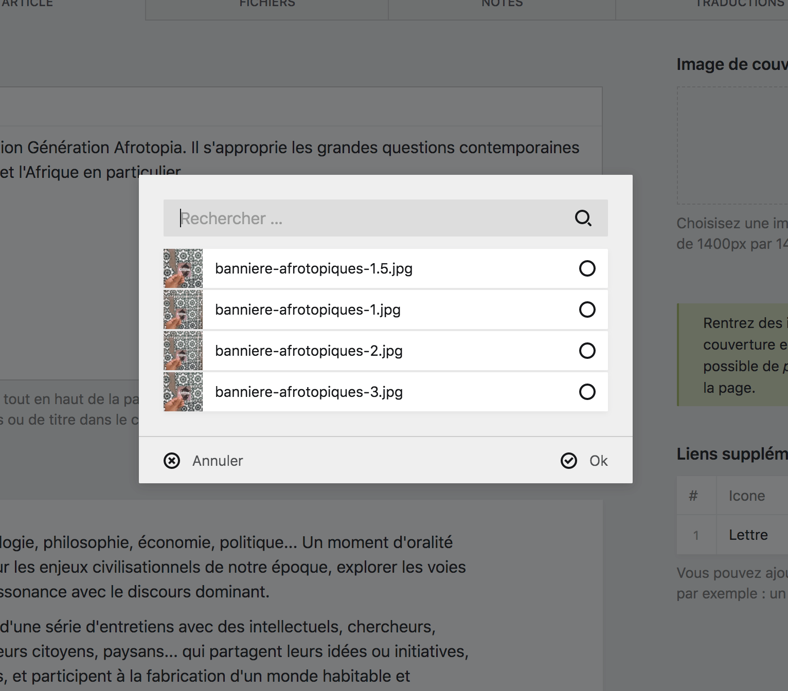
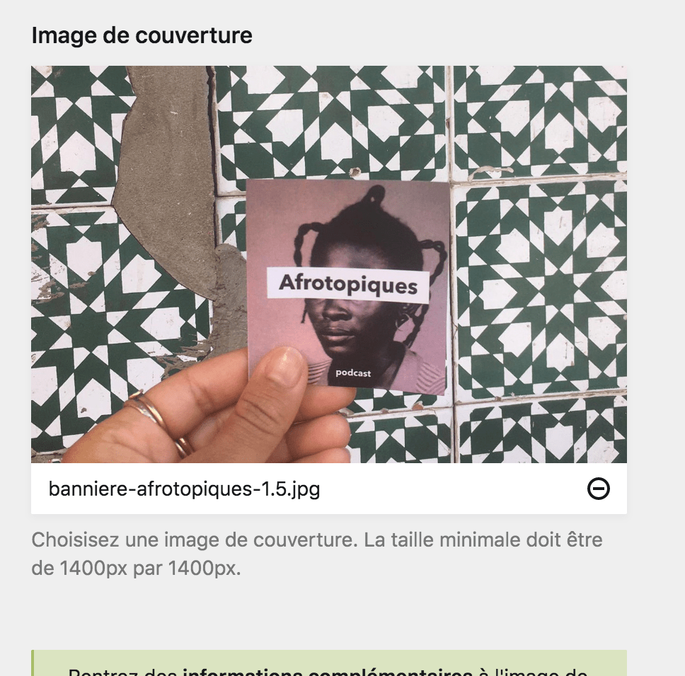
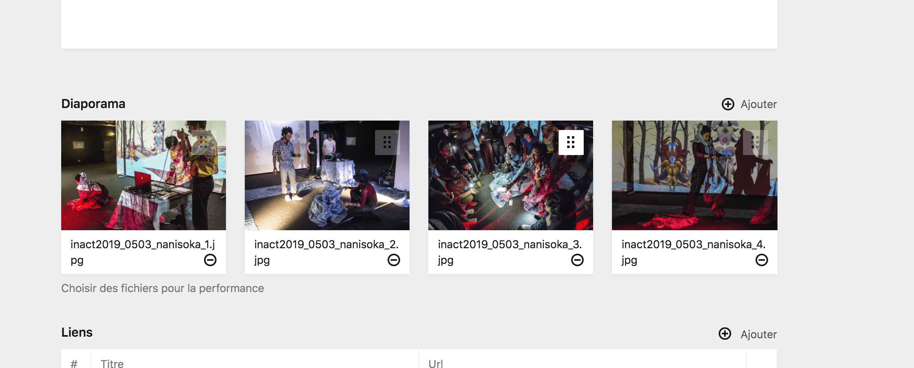

Utiliser les fichiers #
Pour utiliser des fichier au sein d’une page de contenu, vous devez d’abord les importer au sein de celle-ci. Ensuite, vous pourrez indiquer à la page quels fichiers utiliser parmi tout ceux que vous aurez importé.
Vous rencontrerez plusieurs type de champ de sélection de fichiers au sein du Panel, cette section couvre les plus communs, mais tous fonctionnent sur le même modèle. Avec un état vide et un état rempli.
Champ de sélection de fichier unique #
Par exemple, le champ suivant vous demande de choisir une image qui sera la couverture de la page parmis tous les fichiers importé sur la page. Le champ de sélection est en état vide et vous indique qu’aucun fichier n’a encore été sélectionné.

Lorsque vous cliquez sur le champ, ou sur le bouton + ajouter un formulaire de sélection apparaît ou vous pouvez choisir un fichier adapté parmi ceux que possède la page.

Conseil : Remarquez la barre de recherche au dessus du formulaire, elle vous permet de rechercher des fichiers par leur nom. Très utile si la page possède plusieurs dizaines de fichiers.
Une fois le fichier sélectionné, le champ afficera un état rempli, avec un aperçu du fichier. Le champ ne requiérant qu’un seul fichier, le bouton + ajouter a disparu.
Si vous souhaitez changer le fichier, vous devez d’abord dé-sélectionner le fichier déjà choisi, pour ensuite en choisir un nouveau. Pour dé-sélectionner un fichier, cliquez sur le bouton -.

Champ de sélection de plusieurs fichiers #
De la même façon qu’une champ de sélection de fichier unique, ce champ-ci possède un état vide et un état rempli et peut être rempli grâce à un formulaire de sélection.
Il est possible qu’un champ de sélection multiple ai un nombre limite maximal de fichier sélectionnés, à ce moment, le bouton + ajouter disparaît du champ.
